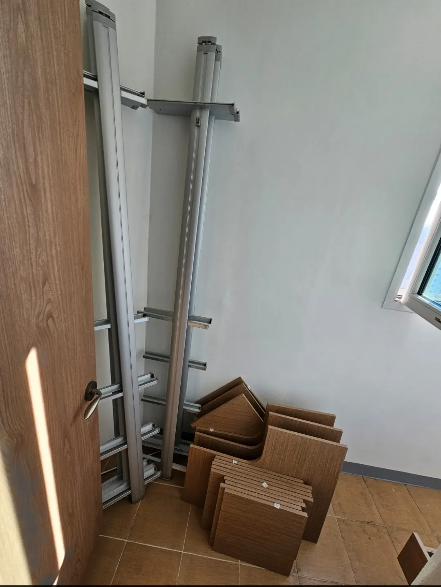

Disassembly
시스템행거
분해 방법
직접 분해하셔도 됩니다. 순서와 정리만 지키면 재설치가 쉬워집니다.
시스템행거는 보통 부속에서 본체 순으로, 위에서 아래로 분해합니다. 서랍장과 거울을 먼저 분리하고, 옷봉과 선반을 내린 뒤 마지막에 천장과 바닥을 지지하던 폴을 풉니다. 폴은 천장을 누르는 힘으로 서 있어서 한 번에 풀면 쓰러질 수 있으니 두 사람이 잡고 천천히 푸는 것이 안전합니다.
분해만 직접 하고 새 공간 설치는 코니처에 맡기셔도 됩니다. 이때 부품을 칸별로 묶고 연결 부품을 봉투에 나눠 담아 두시면 설치가 훨씬 빨라집니다.

Situations
분해하기 전에 할 일
전체 사진 찍기
정면과 옆면, 코너 부분을 찍어 두면 재설치 때 기준이 됩니다.
칸 번호 붙이기
마스킹 테이프로 칸마다 번호를 붙여 둡니다.
연결 부품 봉투
칸별 나사와 브래킷을 봉투에 나눠 담습니다.
두 사람 준비
폴을 풀 때는 반드시 한 사람이 잡아 줍니다.
Checklist
분해 순서
| 순서 | 할 일 | 주의할 점 |
|---|---|---|
| 1 | 서랍장·거울 분리 | 무거운 부속부터 내려놓습니다 |
| 2 | 옷봉 내리기 | 브래킷 나사를 봉투에 담습니다 |
| 3 | 선반 내리기 | 위 칸부터 내려 발에 떨어지지 않게 합니다 |
| 4 | 폴 풀기 | 두 사람이 잡고 천천히 풉니다 |
| 5 | 부품 묶기 | 칸 번호대로 묶어 둡니다 |
Process
분해 후 설치를 맡기실 때
분해 사진 보내기
분해 전 사진과 분해한 부품 사진을 보내주세요.
부품 확인
칸별 부품이 모두 있는지 확인합니다.
새 배치 정하기
새 공간 치수에 맞춰 구성을 정합니다.
설치
칸 번호를 기준으로 다시 세웁니다.
점검
수평과 흔들림을 확인합니다.
FAQ
자주 묻는 질문
폴이 천장에서 안 풀려요
무리하게 당기면 천장면이 상할 수 있습니다. 사진을 보내주시면 고정 방식을 확인해 드리고, 어려우면 해체부터 맡기셔도 됩니다.
벽에 고정된 브래킷은 어떻게 떼나요?
나사를 풀어 떼면 되지만 자국이 남습니다. 코니처는 벽 보수는 하지 않으니 참고해 주세요.
나사 봉투가 섞였어요
설치 전에 부품을 펼쳐 맞춰 보면 구분할 수 있는 경우가 많습니다. 사진을 보내주세요.
분해한 부품은 어떻게 옮기나요?
선반은 세워서, 폴은 모아서 묶으면 옮기기 편합니다. 이삿짐과 함께 옮기셔도 됩니다.
분해하다 부품이 부러졌어요
어떤 부품인지 사진으로 알려주시면 설치에 지장이 있는지 확인해 드립니다.